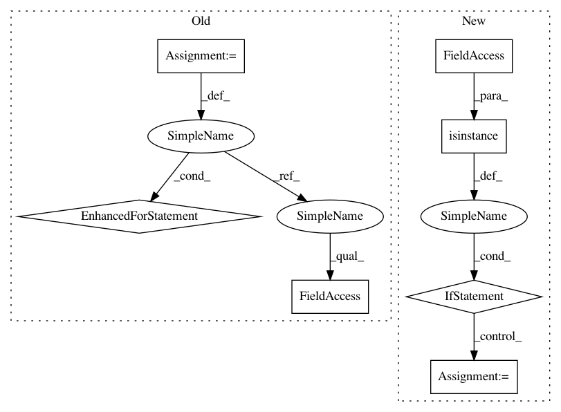

2443550ee6915daf6e7ff6306f3dc2922752ea4b,vis/backend/tensorflow_backend.py,,modify_model_backprop,#Any#Any#,41
Before Change
// Restore original model to keep upstream callers unaffected.
idx = 0
for layer in model.layers[1:]:
if hasattr(layer, "activation"):
layer.activation = original_activations[idx]
idx += 1
// Register modifier.
modifier_fn = _BACKPROP_MODIFIERS.get(backprop_modifier)
if modifier_fn is None:
raise ValueError(""{}" modifier is not supported".format(backprop_modifier))
modifier_fn(backprop_modifier)
After Change
for i, layer in utils.reverse_enumerate(modified_model.layers):
if hasattr(layer, "activation"):
layer.activation = tf.nn.relu
if isinstance(layer, _ADVANCED_ACTIVATIONS):
// NOTE: This code is brittle as it makes use of Keras internal serialization knowledge and might
// break in the future.
modified_layer = Activation("relu")
modified_layer.inbound_nodes = layer.inbound_nodes
modified_layer.name = layer.name
modified_model.layers[i] = modified_layer
// 3. Save model with modifications.
modified_model.save(model_path)
// 4. Register modifier and load modified model under custom context.
modifier_fn = _BACKPROP_MODIFIERS.get(backprop_modifier)
In pattern: SUPERPATTERN
Frequency: 3
Non-data size: 7
Instances
Project Name: raghakot/keras-vis
Commit Name: 2443550ee6915daf6e7ff6306f3dc2922752ea4b
Time: 2017-07-09
Author: ragha@outlook.com
File Name: vis/backend/tensorflow_backend.py
Class Name:
Method Name: modify_model_backprop
Project Name: microsoft/nni
Commit Name: 10d7ece1c34c5533262a54d20d974a3d04f0b7ce
Time: 2020-09-15
Author: 40699903+liuzhe-lz@users.noreply.github.com
File Name: src/sdk/pynni/nni/compression/tensorflow/compressor.py
Class Name:
Method Name: _instrument_model
Project Name: catalyst-team/catalyst
Commit Name: aab3902d4a7d55f5a86058854adc36b8a12c873f
Time: 2019-05-20
Author: ekhvedchenya@gmail.com
File Name: catalyst/dl/callbacks/base.py
Class Name: OptimizerCallback
Method Name: on_batch_end
Project Name: raghakot/keras-vis
Commit Name: 2443550ee6915daf6e7ff6306f3dc2922752ea4b
Time: 2017-07-09
Author: ragha@outlook.com
File Name: vis/backend/tensorflow_backend.py
Class Name:
Method Name: modify_model_backprop